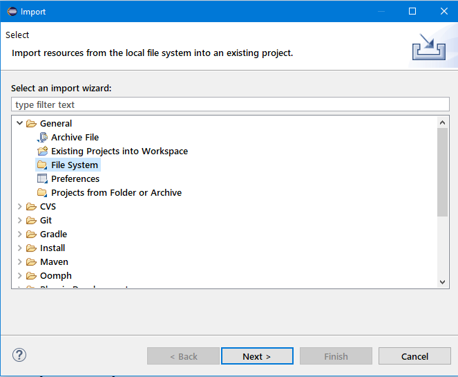
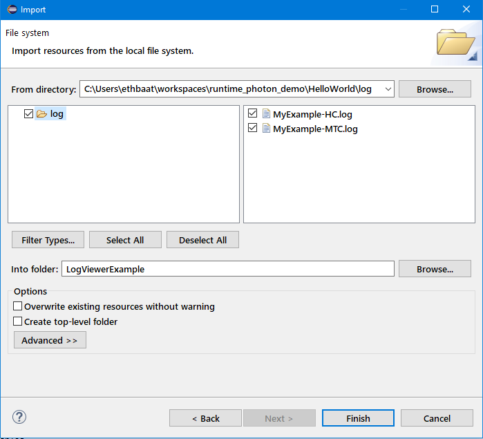

Wizards are available to add existing files to the project. This functionality is available via File / Import .../ General / File System .
Select the project.
Select File / Import .../ General / File System from the main menu.

A dialog appears. Fill the form in:

Push button Finish. The log files appear in the project: